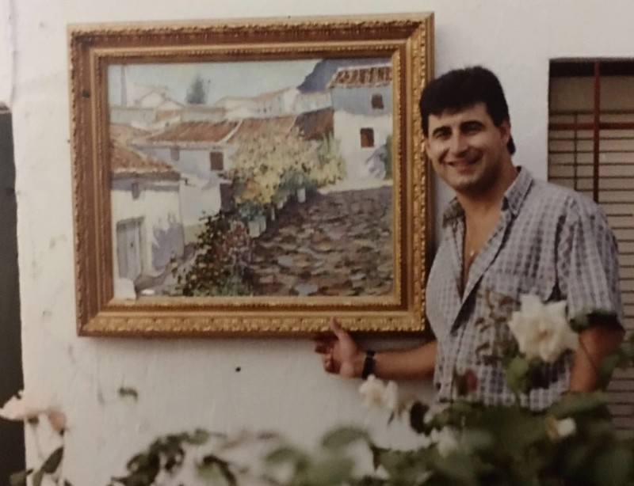
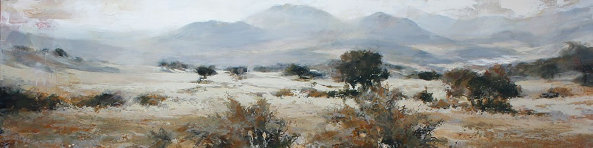
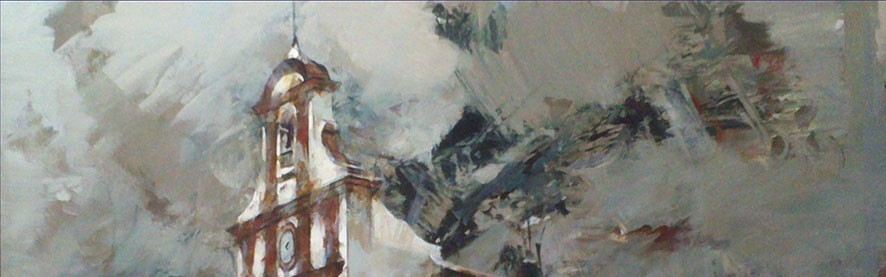
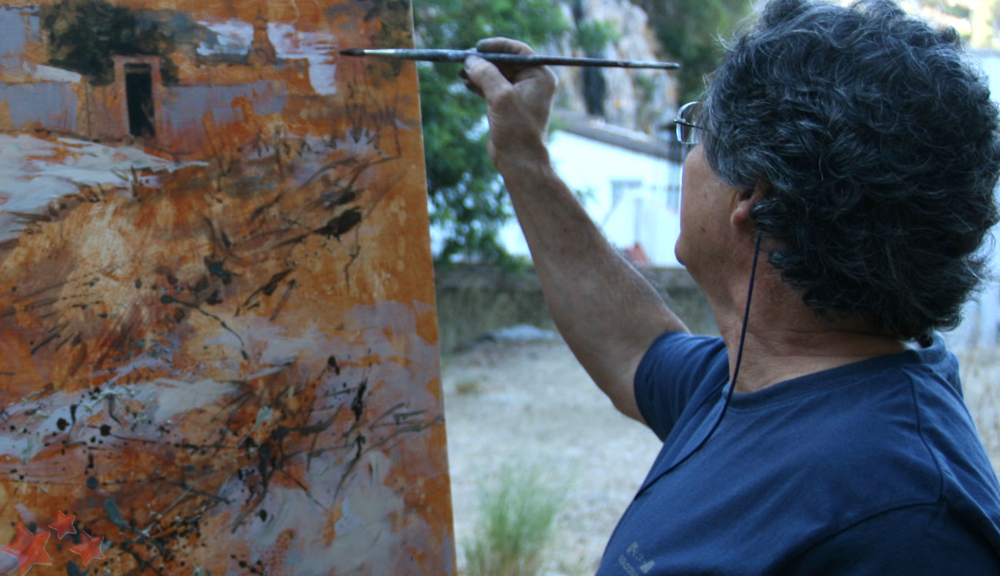

Pintor paisajista de Ubrique
1960 — 2024
Pedro Lobato Hoyos dedicó su vida a capturar la esencia del paisaje ubriqueño. Autodidacta, incansable, siempre en evolución.
Nació en Ubrique, Cádiz el 16 de octubre de 1960. Desde muy joven mostraba un gran interés por el dibujo, sobre todo le gustaba representar animales de la naturaleza de la sierra —zorros, águilas, lobos— mostrando una gran habilidad innata.
Siendo un artista autodidacta, recibió enseñanza en su temprana juventud de la mano de Francisco Peña Corrales, quien le transmitió la técnica de la espátula tal como la practicaba Pierre de Matheu, pintor salvadoreño de raíces gaditanas y formación francesa.

Era amante del paisaje, por lo que sus obras reflejaban una profunda conexión con la naturaleza. Realizaba sus pinturas al aire libre: cogía su coche, montaba el caballete junto al lienzo y los pinceles, y se dirigía a los alrededores de Ubrique. Previamente visitaba cada lugar para estudiar las horas de luz y el encuadre, buscando capturar la esencia de cada momento, destacando especialmente las lejanías.
«Siempre en búsqueda de una constante evolución en su pintura, fue uno de los primeros pintores que contribuyó a proyectar la pintura ubriqueña más allá de las fronteras locales.»
En 1980 realizó su primera exposición en Ubrique. A partir de ahí, las exposiciones se sucedieron a un ritmo constante —a veces varias al año— en ciudades como Ronda, Jerez, Sevilla, Cádiz, Chiclana, San Fernando, Marbella, Almería, Jaén, Valencia, Zaragoza, entre otras.
A mediados de los 90 comenzaron a surgir los primeros certámenes de pintura rápida, en los que empezó a participar cosechando los primeros premios de pintura al aire libre. Esto le llevó a tomar una decisión clave: cambiar el óleo por el acrílico, ya que el óleo requería más tiempo de secado. Con ello, también evolucionó su técnica, pasando de la espátula al pincel.



Belén Hoyo
Contacto de la obra y legado de Pedro Lobato Hoyos
Ubrique, Cádiz — España